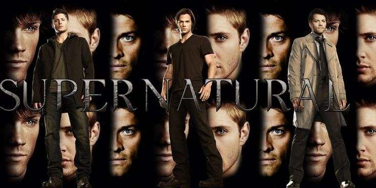

Os irmãos Sam e Dean Winchester encaram cenários sinistros caçando monstros. Os irmãos são criados para caçar criaturas sobrenaturais após a morte da mãe,
Mary, por um demônio quando eram crianças. O pai, John Winchester, ensina-lhes técnicas de defesa e como matar demônios.
Velhos truques, armas e esconderijos não funcionam mais e seus amigos os traem, forçando os irmãos a contar um com o outro enquanto enfrentam novos inimigos.